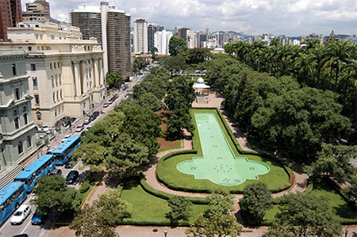
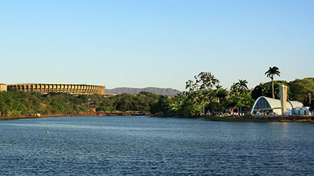
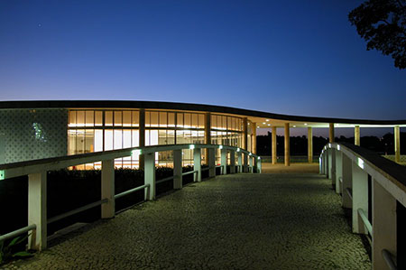
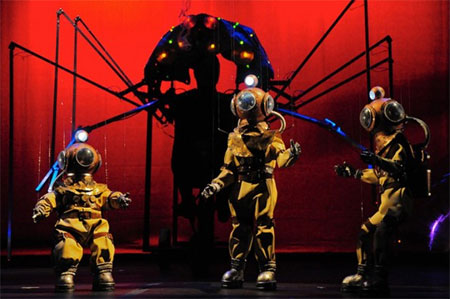

Conheça BH
Clima em novembro
Temperatura máxima média: 27°C Temperatura mínima média: 17°C Há, normalmene, expectativa de chuvas esporádicas nessa época do ano. Fonte: climate-data.org
Atrações
Circuito Cultural Praça da Liberdade: circuitoculturalliberdade.com.br

Localizado na região central de Belo Horizonte é, atualmente, o maior complexo cultural do país. Ao todo, são onze espaços e museus em funcionamento: Arquivo Público Mineiro, Biblioteca Pública Estadual Luiz de Bessa, Centro de Arte Popular Cemig, Centro Cultural Banco do Brasil, Espaço do Conhecimento UFMG, Horizonte Sebrae – Casa da Economia Criativa, Cefar Liberdade, Memorial Minas Gerais Vale, Museu das Minas e do Metal, Museu Mineiro e Palácio da Liberdade.(mapa)
{kind=link}

Atrações
Conjunto arquitetônico da Pampulha: http://pt.wikipedia.org/wiki/Pampulha

A lagoa artificial foi construída na década de 1940, quando o prefeito era Juscelino Kubitschek. Para compor o seu entorno Oscar Niemeyer projetou um conjunto arquitetônico que se tornou referência e influenciou toda a Arquitetura Moderna Brasileira. Fazem parte do conjunto a igreja de São Francisco de Assis, o Museu de Arte, a Casa do Baile e o Iate Tênis Clube. Os jardins de Burle Marx, a pintura de Portinari e as esculturas de Ceschiatti, Zamoiski e José Pedrosa completam e valorizam o projeto concebido para a lagoa.
A orla da Pampulha concentra várias opções de lazer, como o ginásio do Mineirinho, o Jardim Zoológico, o Centro de Preparação Equestre da Lagoa e pistas para ciclismo e caminhada. É lá também que está o Estádio Governador Magalhães Pinto, mais conhecido como "Mineirão".

Atrações
Grupo Corpo: http://www.grupocorpo.com.br/

O Grupo Corpo é uma companhia brasileira de dança e teatro contemporâneo conhecida por seu estilo único e suas coreografias que frequentemente desafiam a percepção da audiência sobre ballet e dança moderna. Fundada em 1975 e sediada em Belo Horizonte, o Grupo Corpo ganhou fama internacional por seu estilo de dança com influências brasileiras porém distinto das demais companhias brasileiras de dança.
Giramundo: http://www.teatrodebonecos.org/2011/

O Museu Giramundo é guardião do maior acervo de teatro de bonecos das Américas. Seu acervo se distingue de outros similares por estar “vivo”, com grande parte dos espetáculos originais ainda em atividade. Cerca de 400 bonecos e marionetes enfeitam este curioso museu. O Giramundo é o mais importante grupo de teatros de bonecos do país, ganhador de diversos prêmios nacionais e internacionais. Também se destaca no acervo a grande coleção de desenhos e projetos técnicos de Álvaro Apocalypse, um dos maiores criadores de teatro de bonecos do mundo.
Outras informações turísticas
Para mais informações relacionadas a Pontos Turísticos, Alimentação, Cultura, Lazer, Transportes, Compras, etc., consulte http://www.belo2014.com.br